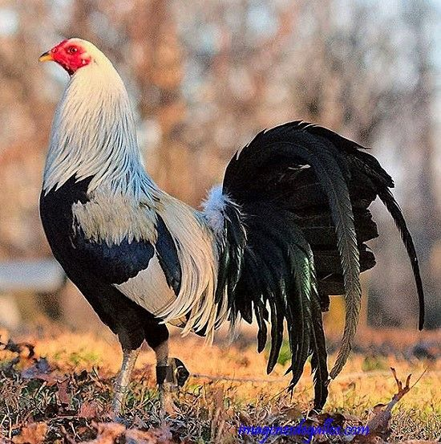
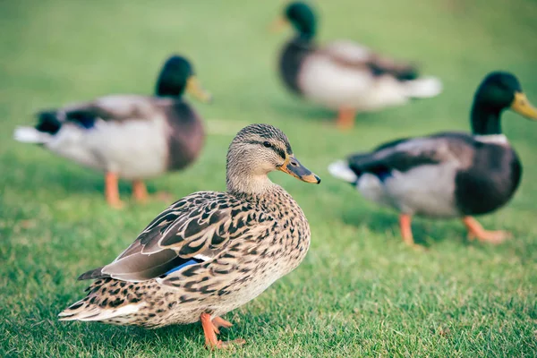
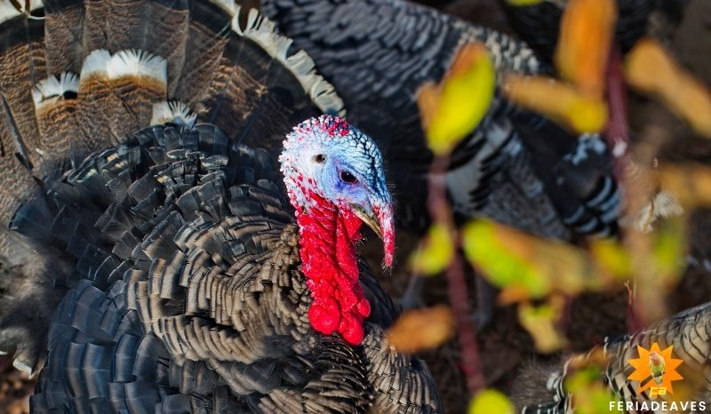
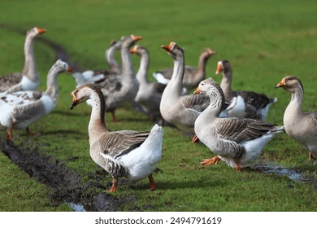

¡Bienvenidos a AviMarket, Tu Socio en la Cría de Aves de Corral!
AviMarket es tu proveedor confiable de aves de corral de alta calidad. Ofrecemos una amplia selección de especies, garantizando salud y productividad para mejorar tu granja. Nos enfocamos en brindar un servicio excepcional y asesoramiento experto, asegurando que cada compra sea una inversión segura. En AviMarket, tu éxito en la cría de aves es nuestra prioridad.
Lo último de nuestro blog
Perfecto para una carne sabrosa y nutritiva.
Excelente opción para una carne tierna y jugosa.
AVES DISPONIBLES
En nuestra granja, las aves de corral son mucho más que proveedores de huevos y carne; son compañeros que enriquecen nuestras vidas con su presencia y vitalidad

gallos

patos

pavos

gansos
Ubicanos
Av Calle Blanco Galindo & Miguel Lanza
Número de referencia 63883373